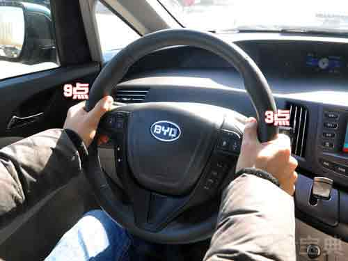

-
1. 正确的座椅高度应调整到驾驶者的视线不会被方向盘挡住，并可以清楚地看见所有的重要仪表及街道标志。
-
2. 在调整好座椅的高度后，还要调整座椅的前后位置。首先应将臀部尽量向后靠，以顶到坐垫及椅背之间最好，这样可使自己坐得更稳，不会晃动。坐稳之后应 注意一下手、脚的位置，把左右手分别放在方向盘9和3点钟的位置，此时不可以让自己的背部离开椅背，如果离开的话，表示你坐得太靠后，必须把座椅往前挪。


汽车座椅调整不好开车会很不舒服，一定要在车行驶前就调整好，不要边开车边调整以免导致不良后果的哦！
1. 正确的座椅高度应调整到驾驶者的视线不会被方向盘挡住，并可以清楚地看见所有的重要仪表及街道标志。
2. 在调整好座椅的高度后，还要调整座椅的前后位置。首先应将臀部尽量向后靠，以顶到坐垫及椅背之间最好，这样可使自己坐得更稳，不会晃动。坐稳之后应 注意一下手、脚的位置，把左右手分别放在方向盘9和3点钟的位置，此时不可以让自己的背部离开椅背，如果离开的话，表示你坐得太靠后，必须把座椅往前挪。

上下调整座椅时，要让头部与车顶至少有一拳的距离。 当脚踩住制动踏板至最底端时，腿部仍要有一定的弯曲量。 另外两手要略微弯曲，这样万一发生事故时，能有效分散撞击力，避免力量集中在手臂各关节上。